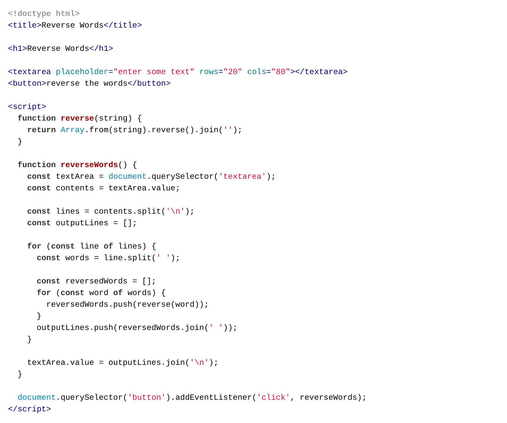

You are not registered and cannot track your progress
This page has code examples for you to try out.
In this stage, we will challenge you to change code from previous stages to run in HTML pages.
Typing code helps you learn, so rather than giving you text to copy and paste the code is an image that you must read, hold in your mind, type in to your editor and then manually check for accuracy.
When we type, we make mistakes and that's OK – finding what we've done wrong is part of programming so this is a useful experience.
Always test your program with a few different inputs to see that it behaves as expected.
As always, we encourage your feedback on the process and the examples.
In this stage, we will adapt code from previous stages to run in HTML
pages. You will need to put this code in a file with the .html
name extension (such as stage-5-1-length.html) and then open
the HTML file in a browser to see it run.
Here, we take the stage-1 example of finding out the length of input, and put it in a web page.
Take the prime check function from stage 3 and put it in a web page.
In stage 1, we could only add numbers; here we can give the user a much better calculator as a web page.
Like in stage 4, here we can reverse the characters in each word within the user's input, whilst maintaining the original order of the words.
Challenge: take three other examples from each of the previous stages and turn them into web pages with the same or better functionality.